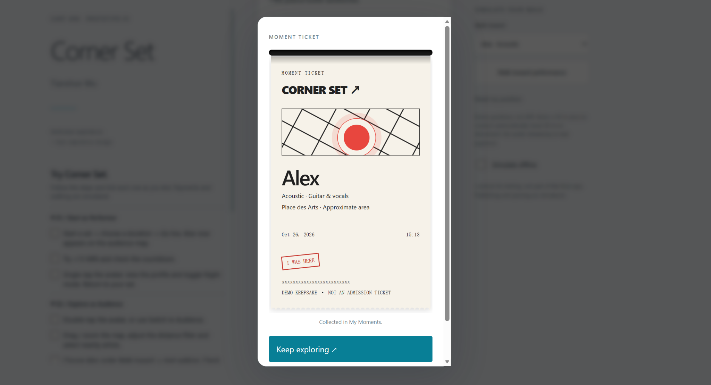
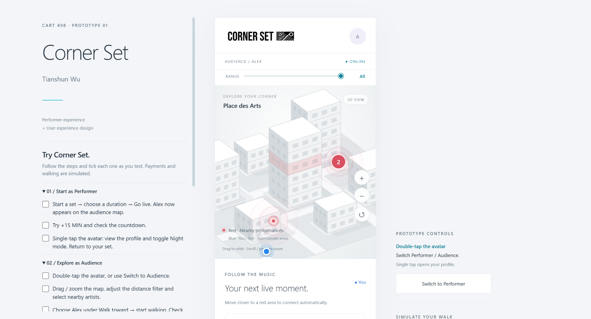
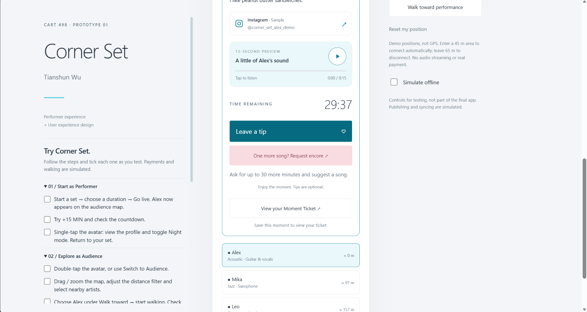
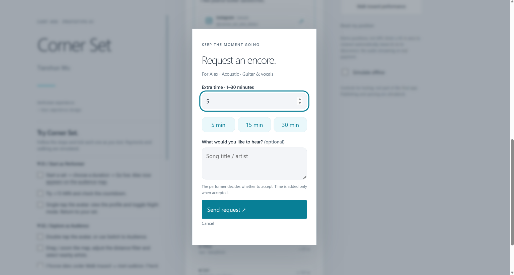
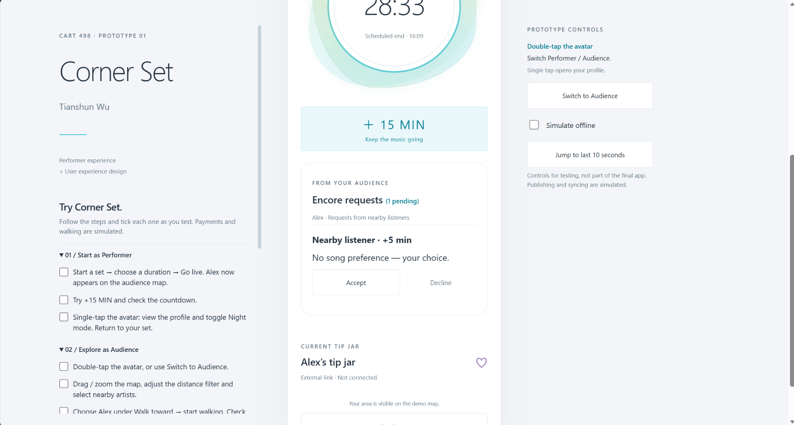

01
Low-Friction Interaction
Performers should be able to publish with very few actions while setting up their equipment.
B2C Track · UX Design Journal
Corner Set is a mobile platform that helps independent musicians announce spontaneous public performances and helps nearby audiences discover them in real time.
01
Foundation
01
Performers should be able to publish with very few actions while setting up their equipment.
02
The interface should clearly show whether a performance is being configured, live, paused, or finished.
03
Remaining time and live status should be understandable during a quick look at the screen.
04
Performers should be able to extend, pause, resume, or end a session without repeating setup.
02
Primary, Secondary & Future Users
Research status: These personas represent initial behavioral assumptions and will be revised after user testing.
03
To Be Tested
04
Performer & Audience
05
Task Structure
The main navigation action becomes “Start a Performance.”
The current prototype uses a simulated location. Live location detection remains a future implementation.
The performer chooses 30, 45, or 60 minutes.
The location and duration are confirmed before publication.
The live screen shows remaining time with options to add 15 minutes, pause, or end.
The public pin is removed when the performer ends the session or the timer reaches zero.
06
Working Interaction
The project has moved from early screen planning to a working browser prototype. The weekly entries below document the interface and the changes made along the way.
Start a set, choose a duration, and manage the remaining performance time.
Browse the map, adjust the distance range, open a musician's card, listen to Alex's preview, and simulate a tip after connecting nearby.
Locations, walking, and payments are simulated. The preview plays a prerecorded audio file. Screenshots and design decisions are documented in Week 06.
September 8, 2026
I selected the B2C track and began examining how Corner Set serves both performers and audience members within one application.
I am interested in the contrast between discovering nearby music and publishing a performance. The two roles share one platform but have different immediate goals.
September 15, 2026
This sprint focuses strictly on the performer side. The setup should let an artist confirm a location, select a timer, and publish in very few actions.
How might Corner Set allow a street performer to publish and manage a live performance quickly while setting up equipment?
The bottom navigation changes according to the active role. In Performer mode, its central action starts a performance. During a live session, a large circular control shows the remaining time and provides access to pause and resume.
Create grayscale wireframes and test whether users can confirm location, choose a duration, go live, add 15 minutes, and end the session without guidance.
September 22, 2026
This week, I created an initial prototype of Corner Set, my platform for connecting street performers with nearby audiences. I focused mainly on the performer side, exploring how someone could start a set and manage their performance time through a simple interface.
The current flow moves from a home screen to a setup page, where the performer can choose a duration of 30, 45, or 60 minutes. During the set, a large circular timer displays the remaining time, with options to add another 15 minutes or end the performance. I wanted the main information and controls to be easy to read at a glance, since performers should be able to focus on their music without constantly interacting with their phones.
Visually, I explored a light background with soft blue and green accents. The timer has an organic shape around it, which introduces a sense of movement into an otherwise minimal interface. I also included an offline simulation to explore how the app communicates connection problems. At this stage, the map is illustrative, publishing and syncing are simulated, and the tip jar is only a placeholder.
Working on this prototype helped me think more carefully about the different states of a performance: preparing, going live, extending the session, and finishing. It also raised a question about location: the current design shows an approximate public area, but I still need to consider whether that gives audiences enough information to find a performer.
Next, I would like to experiment with a 3D map and develop the audience side of the platform. Possible features include finding nearby performances, viewing performer profiles, and checking how much time remains in a set. I want to explore whether a 3D view makes discovering performances more intuitive while keeping the interface easy to navigate. My next step is to connect these audience interactions with the performer flow and see how the two experiences work together.
Select a screenshot to view it at full size.


September 29, 2026
This week, I expanded the Corner Set prototype based on the client's requirements. I added day and night display modes, developed the audience side, and added a tipping page. These updates connect the performer flow from last week with the experience of someone discovering and supporting a nearby performance.
I added an appearance toggle in the profile page so users can switch between a light daytime view and a darker nighttime view. Both modes keep the same layout and controls, while the background, text, and accent colours change. My aim is to make the interface suitable for different lighting conditions without making users relearn how to navigate it. I still need to test readability outdoors and after dark.
I also added an Audience mode, which users can access by double-tapping the profile avatar. The map uses grey and white 3D buildings, a blue marker for the listener's position, and red signals for nearby performances. The expanding red rings indicate approximate performance areas. The audience page shows the performer's information, distance, and remaining performance time, helping listeners decide which set to approach.
The prototype can now simulate an audience member walking toward a performer. Using the testing controls, I can select a performance and move the listener's position closer to it. When the listener enters the nearby area, the interface automatically connects to that performance. This lets me explore the transition from discovering music on the map to viewing the performance's details without asking the listener to manually join. The movement and connection use demo positions rather than live GPS or audio streaming.
I added a tipping page so the audience experience can continue from finding a performance to supporting the musician. The audience card includes a “Leave a tip” action, which becomes available after connecting nearby. The payment interaction is simulated at this stage; the focus is on the steps and feedback that make supporting a performer understandable.
Select a screenshot to view it at full size.


Updated October 20, 2026
For this update, I focused on what an audience member needs before choosing a performance: how far away it is, what it sounds like, and who is playing. The client also wanted a quicker way to tip. I built on the existing map and performance cards so these additions would fit into the same browsing experience.
I first tried separate distance buttons, then changed them to a compact slider above the map. The range now runs from 50 to 300 metres, with All at the end. I reduced the upper limit from 500 metres because the demo performances are closer together. The slider takes up less space, although I still need to check whether people notice the All option.
I also added Nina near Leo to explore what happens when two musicians perform close together. When zoomed out, their markers combine into a red dot labelled 2. Clicking it zooms in and reveals the separate markers. This gives me a small example of how to keep a busy map readable.
The performance cards now include genre tags, a short Behind the Sound introduction, and an Instagram link. I wanted the bios to sound like something a person would actually write. Mika uses lots of emoji, Leo is more casual, and Alex's introduction is simply about liking peanut butter sandwiches.
I added a 15-second preview to Alex's card, using a prerecorded file that starts at the 11-second mark. The player includes play, pause, and a progress bar. This responds to the developer's concern about live audio streaming: a short stored clip is enough to demonstrate how someone could hear a sample before deciding to go. For now, Alex is the only musician with audio, and the sample is test content.
I expanded the tipping popup with an Apple Pay-style screen. After choosing an amount, the listener sees a demo card and double-taps the confirmation area. A simulated Face ID animation leads to a success message. I wanted the interaction to give clear feedback without taking the listener away from the performance. It does not use the camera, authenticate a face, or charge money.
I kept the expanding red rings as the prototype's visual alert for nearby performances. They draw attention to activity while someone is looking at the map. This is my current interpretation of the arrival-alert idea; an opt-in notification when a new set begins nearby is still outside this version.
I also fixed broken characters in the payment screen and moved the desktop project title to the top left. It previously shifted vertically when I switched roles because the audience page was longer than the performer page.
The cards now give listeners more information, but they also take up more space. I want to see whether someone can find the preview and tipping action without being guided. I also want to check whether the grouped marker reads as two performances, and whether the payment confirmation is clear on a phone. These are questions for testing, rather than results I can claim yet.
Select a screenshot to view it at full size.


Retrospective entry / Added October 26, 2026
I wanted to give listeners something to do once they had found a performance they liked.
Most of my earlier work was about getting people to a performance: finding it on the map, checking the time, and walking closer. For this entry, I focused on what happens after that. I worked on saving a moment, asking for an encore, and making the tipping interaction fit alongside those options.
I added a Moment Ticket that listeners can save when they are near a performance. It includes the artist, place, date, and time, with a small “I WAS HERE” stamp. I liked the idea of having something to look back at after coming across music by chance. It is a keepsake, not an admission ticket.
I also gave it a printing animation. The ticket comes out of a slot, which makes saving it feel a little more physical than just pressing a button and seeing a message. Saved tickets appear in My Moments, where they can be opened again or deleted. I kept the collection simple, without adding downloads or a sharing flow.
A little reminder of being there.
The encore feature lets a nearby listener ask for 1–30 extra minutes and type in a song they would like to hear. I kept the song field optional because someone might simply want the musician to keep playing.
On the performer side, Alex can see the requested time and song, then accept or decline. The timer only increases after acceptance. I felt this was important: enjoying a set does not mean the audience gets to decide how long the musician stays. For now, I kept the feature on Alex’s side so I could work through one complete interaction. The requests are cleared when the set ends.
I kept Leave a tip beside the encore action, building on the payment flow from the previous entry. The Apple Pay-style screen and simulated Face ID give the interaction a clear finish. No actual payment takes place. I also kept tipping separate from requesting a song or saving a ticket. I do not want those actions to feel like something the listener has to pay to unlock.
While going back through the prototype, I added a short checklist beside the app so someone can try both roles without me explaining every step. I also connected Alex’s map listing to the live session: the set has to be published before it appears for the audience.
The audience card now has several things to do, and I am not sure yet whether all of them need to be visible at once. I want to ask classmates whether Save this moment makes sense before they open the ticket, and whether the encore request feels easy to use. I also want to see if they notice that a request is still waiting for the performer’s answer.
Prototype notes / 05 views
Screenshots captured October 26. Select an image to view it at full size.





07
To Test